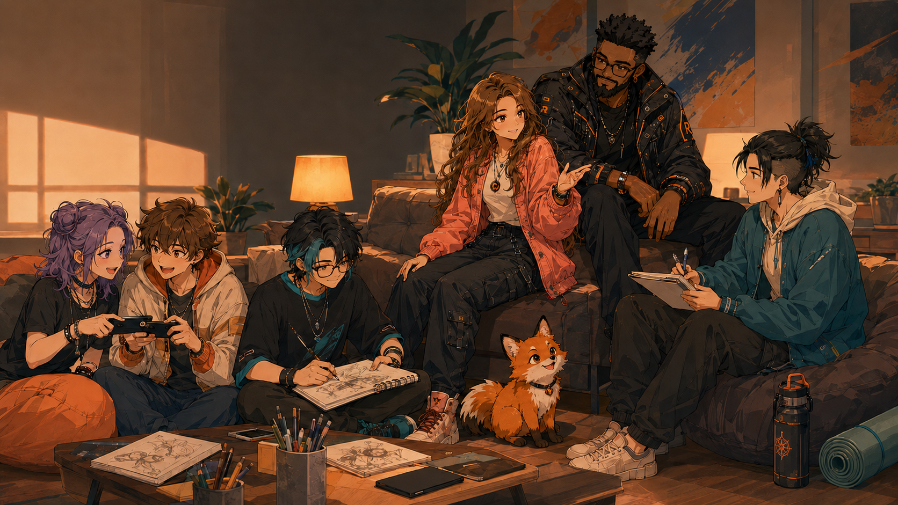
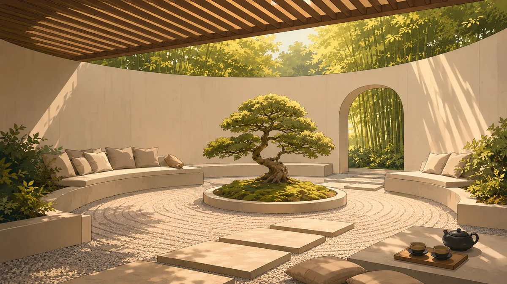
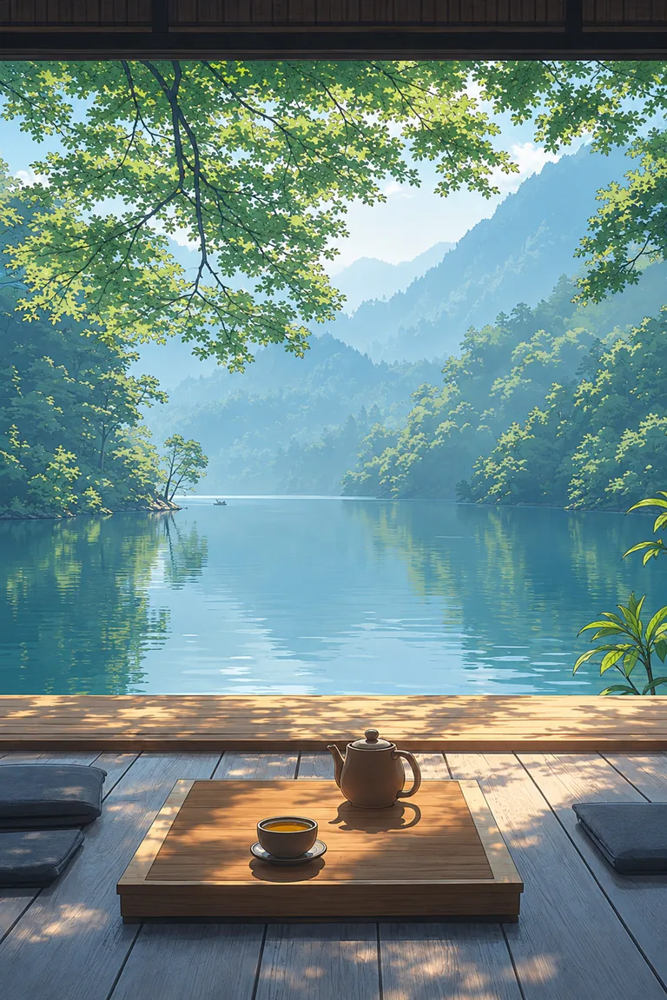
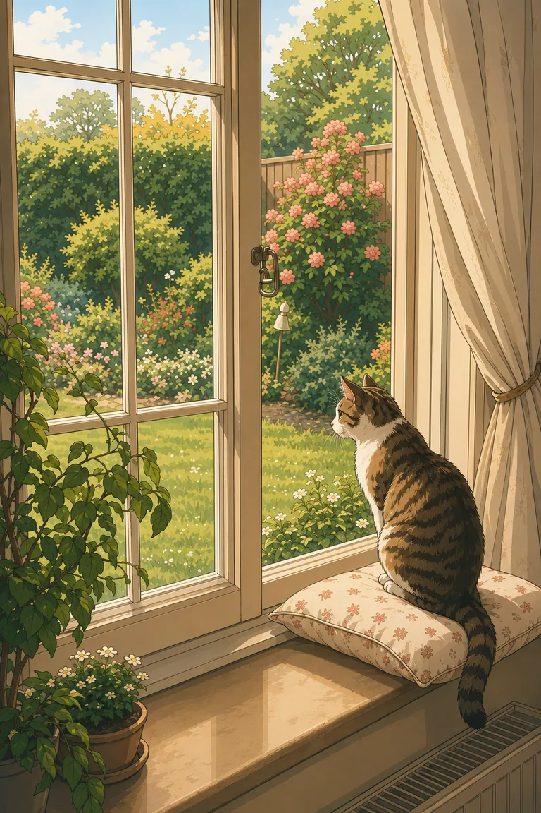

Creators · Fans · Recovery
COMMUNITY
A place to belong, share what you love, build what does not exist yet, and recover between adventures.
Rest at the campfire
MIND. BODY. HEART.
Every hero needs a place to recover.

01 · Reset
MIND
Quiet the noise. Make room to breathe.
- Reflection and journaling prompts
- Burnout and mental-reset articles
- Daily quests and mood checks

02 · Recover
BODY
Recovery is part of the training.
- Hydration and rest reminders
- Stretching and movement breaks
- Training Arc checklists

03 · Reconnect
HEART
You don’t have to carry everything alone.
- Encouragement and affirmations
- Connection and relationship reflections
- Community stories and weekly buffs
Featured Mind Quest
DEFEAT THE FINAL BOSS CALLED “STARTING”
Seven Japanese-inspired methods for lowering the pressure, making the first move smaller, and building real momentum.
Wellness toolbox
YOUR RECOVERY INVENTORY
Supportive experiences are being built for this space: Daily Quest, Adventure Log, Random Buff, Mood Check, Training Arc Tracker, Achievement Board and Campfire Mode.
Mind. Body. Heart. offers encouragement and practical reflection—not a substitute for professional care.